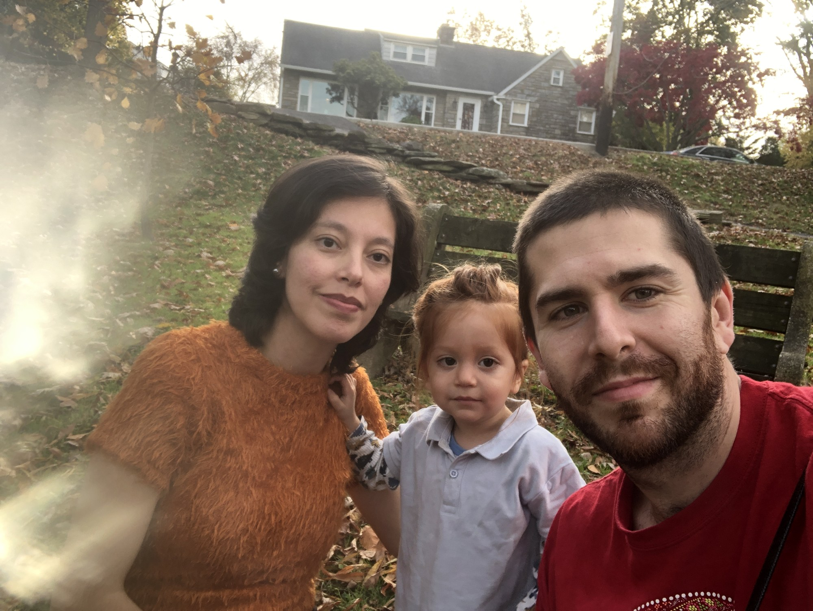
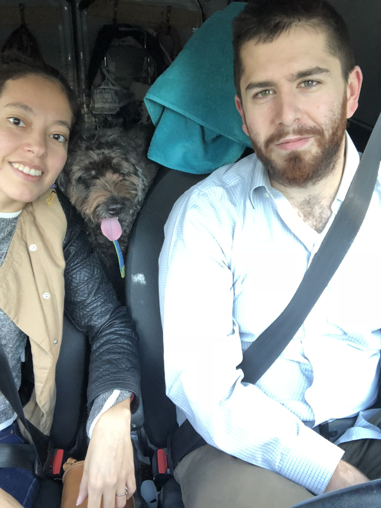
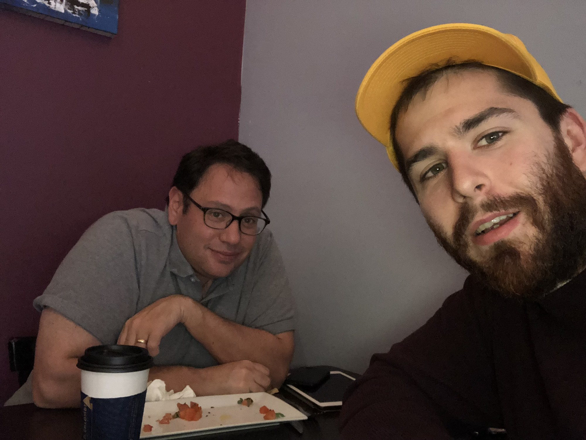
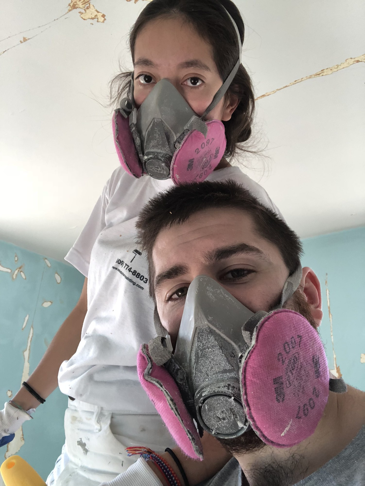
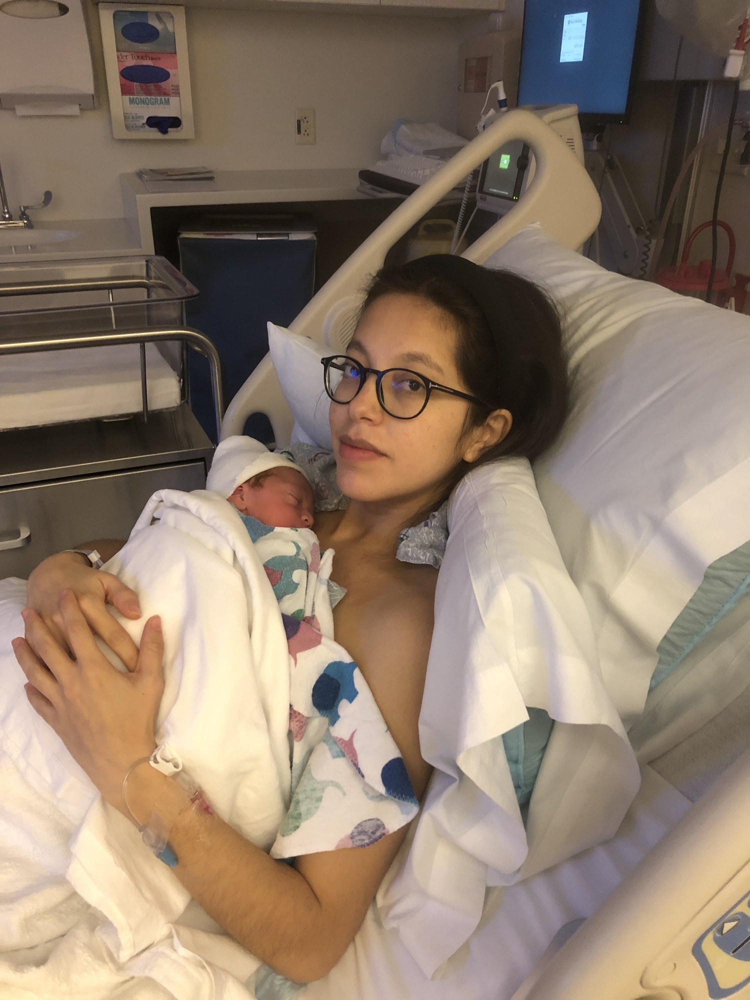
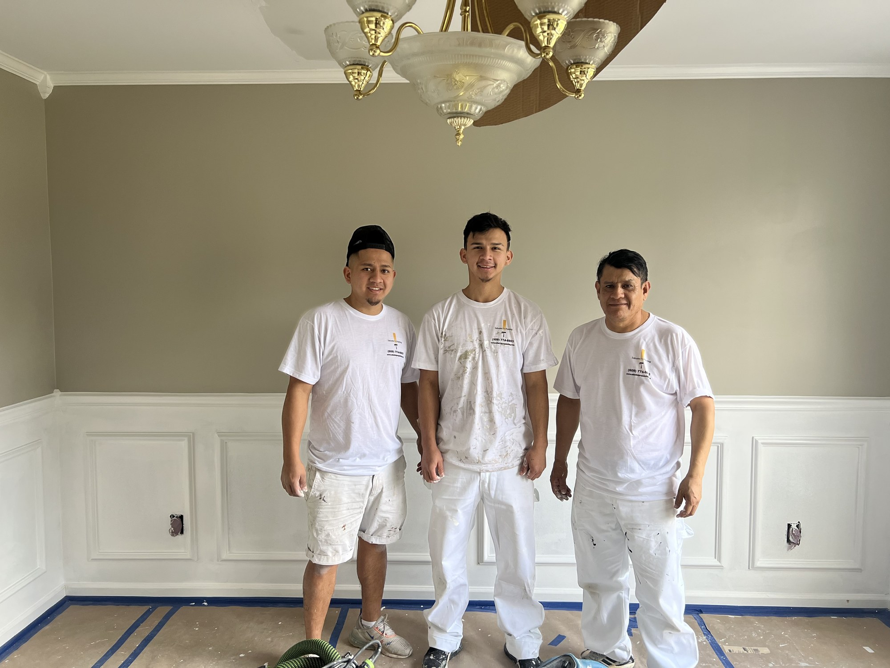
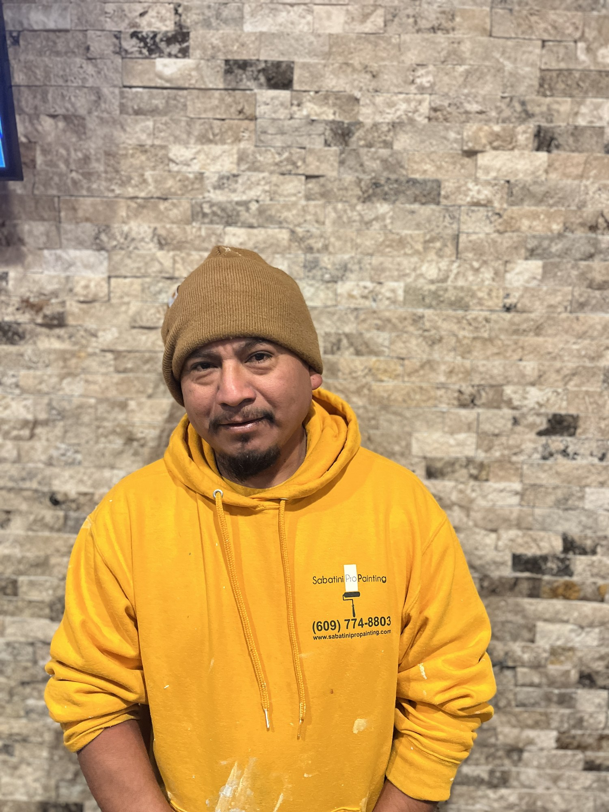
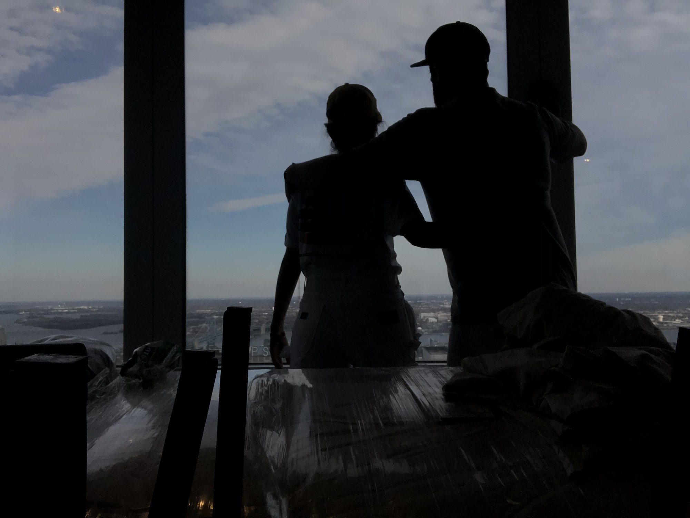

The long version — falling in love, figuring it out, and slowly realizing what we were building.
People ask how the painting company got started. The honest answer is that it didn't, exactly. Ale and I were trying to build a life, and the company turned out to be one of the things we built along the way. I don't think I understood that at the time. I'm not sure I understood it until pretty recently.
I grew up in a tense house — the kind where you learn early to find the one thing you can actually control. For me, some of that was a guitar. Some of it was paint.
When I was eight I asked to paint my own room, and I got handed four colors I hadn't picked. A year or two later I spray-painted my bike out in the yard, in secret, because I wanted one thing that looked like mine. I got in trouble for it. I didn't think much of it at the time. It was just a bike.
For a long time I thought music was the thing I was actually meant to do, and that painting houses was just what paid the bills until I got there. I loved everything underneath a song — the way a few words could put you inside a room. I'd be driving and hear whole scenes.
I had a guitar teacher named Pepper Brown. He told me once that the good players aren't the ones with the flashy solos. They're the ones who'll play the boring stuff ten thousand times when nobody's around to hear it. I didn't do anything with that for years. It just stuck.
For a while I figured the music was the dream and the painting was the detour. It took me a long time to notice I had that backwards.
Ale grew up a long way from South Jersey. She was born in Bolivia, moved to Italy when she was seven, and came to the States at twenty-four to work as an au pair for a year. That's the year we met. She was going to teach me Spanish and Italian; I was going to help with her English. It turned into dinners, and then it turned into everything else. Nine months after we met, we got married.
When I left Bolivia for Italy at seven, I thought we were going on an adventure. You don't understand everything at that age. You just know people speak a different language now, and your parents are going to be working a lot. I watched mine build a whole life from nothing.
By the time I was twenty-four I wanted to try building one of my own, so I came here for a year. I wasn't scared. I was excited. And then there was Rick, who never once tried to be anyone other than exactly who he was. That's the thing I fell for.
The business wasn't a plan. Ale had just moved in and I'd just lost my job, and painting was the only thing I could think of that might keep us going — and, honestly, keep her here. So that's what we did.
We were renting a room from roommates in Chester, Pennsylvania. We got to jobs in an $800 1998 Ford Econoline. Our first year we finished about a thousand dollars in the hole — we actually counted — and got through it on a small loan from Ale's dad that we paid back inside the year.
When Rick lost his job and we decided to start painting, I wasn't scared. I've never really led with fear. He was so excited to learn a trade and build something of our own, and I just wanted us to build it together. That was what the American dream meant to me — work hard enough, and you can make a life you didn't think you could.



The van, the two of us, year one.
One of the first jobs was an older woman on a fixed income who wanted a single bedroom done, the rest "someday." I remember driving home wondering why she'd spend the money on paint when there were bigger things she could have spent it on. I didn't have a clean answer. I just knew I didn't want to be the guy who did a lazy job on the one room she'd saved up for.
Another woman hired us for one bathroom. We found out later it was on purpose — she never gave a big job to anyone she hadn't tried on a small one first. We did that bathroom like it was the whole house. She gave us the whole house, then her kitchen cabinets. It turned into about eight years of work, and her son and I are still friends.
Then Ale went to visit her family and couldn't come back. A visa problem turned a short trip into a year and a half. We spent it on the phone, in different time zones.
She landed on a Thursday. We moved into a little apartment in Chester on Friday. Monday we were back to work.
Starting the business wasn't the hard part. The hard part was leaving. Going back to Italy, not knowing how long we'd be apart or whether Rick could keep it all going without me — that was the worst of it. Months turned into more than a year.
When I finally came home, it felt like we were starting over, except steadier. We were more sure of what we wanted.
In the spring of 2020, everything shut down. The same week, Ale told me she was pregnant. We'd just switched the business to an LLC, and through some bad timing that left us out of the relief checks a lot of other shops got. A few of them bought new trucks with theirs. We just kept working.
Ale had to come off the jobs, which meant I suddenly needed real help, in the middle of a year when nobody knew what was coming. I stopped thinking about music around then. I didn't decide to. There just wasn't room for it.
Our son was born and we named him Ezra. It means help. That's honestly what it felt like we'd been given.
We brought him home, and the next morning I went back to work. Ale stayed home figuring out how to be a mother with no manual for it. I don't think either of us slept much that year.

For a while I figured being good at the work and willing to outwork everyone would be enough. It wasn't. I'd never managed a single person in my life, and it showed.
So I went looking for people who actually knew how to run a company. One of them took an honest look at my books and my systems and, pretty kindly, told me how far from professional we really were. It stung. Then the three of us flew down to a painting conference in Florida, and I came home embarrassed and more excited than I'd been in years. A guy named Brendan and the people around the APC started showing me how to build an actual business instead of just doing good work and hoping.
Getting bigger created problems I'd never had before. On one job, while I was away, a machine broke down partway through. Instead of stopping to swap it out, the crew tried to work around it, and they filled the family's house with dust. The family had a newborn. They couldn't stay there.
We paid for their hotel, paid to have the place cleaned, refunded the job, replaced the equipment, and told each other we'd never let it happen again. They probably won't call us back. I don't blame them.
A run of new hires didn't work out, and I ended up nearly back to doing everything myself. Around then Ale's dad, Teofilo, came up from Bolivia to meet Ezra, and he spent a few days working next to me on a big job. He kept saying the same thing in Spanish — falta gente. You need people. Good people.
The Monday after he flew home, a guy named Virgilio showed up to try out. He never left. He's the only painter I've worked with who I'd put on my own level — not because of his hands, though those are good too, but because he gets what we're trying to do. Everyone we've hired since, I've measured against him.



The crew. We measure everyone against Virgilio.
There were stretches — even after we had a good team, even after it looked like it was working — where I wanted to quit. That feeling never completely went away. Early on, walking away would only have hurt my own family. Later there were other families counting on the business staying open, and that made it a different kind of scared.
What kept me in it wasn't confidence. Most days I didn't feel like I had enough of whatever it was supposed to take. I just knew it wasn't only my risk anymore. The thing had started as a way to keep one person in my life. It just kept adding people.
Somewhere in all of that I realized I'd circled back to what Pepper Brown told me about the guitar. The work that makes people trust you isn't the impressive stuff. It's covering the floors, calling when you say you will, and doing the boring parts right every time, whether anyone's watching or not.
I got a little obsessed with that — less with the painting, more with what it actually feels like to be the person whose house it is. Everything got easier once I did.
In 2022 we bought our first house. In 2023 we had a daughter and named her Alba — it means dawn. Ale's mom came up to help with the kids. For the first time in a while, it felt less like getting through something and more like a life.
The duck showed up on the truck years ago, mostly as a joke — the best for your nest. It stuck. Lately we've been putting a real name to it: Quack.
It's not a new direction. It's just the clearest name we've found for how we've been trying to work the whole time. Same two people. Same idea we started with.

I didn't set out to build a company. I fell in love, got married, had a few hard years, became a father, and slowly figured out what I'd actually been building the whole time.
Mostly I want the person who lets us into their home to feel the way Ale and I would want to feel — that the people doing the work care about it as much as we did when it was just the two of us.
At the end of the day, all of it — the family, the business, the way we treat people — is about making two kids proud. A little Ale and a little Rick, who watched their parents work hard and believed they could build something that mattered.